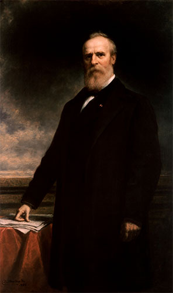

<html>

<head>
    <link rel="stylesheet" href="https://unpkg.com/leaflet@1.0.0-rc.3/dist/leaflet.css" />
    <link rel="stylesheet" href="styles.css" />
    <script src="https://unpkg.com/leaflet@1.0.0-rc.3/dist/leaflet.js"></script>
</head>

<body>
    <div id="mapid"></div>


    <script>
        var mymap = L.map('mapid').setView([40.445109514941606, -81.00774037625682], 7);

        var LeafIcon = L.Icon.extend({
            options: {
                shadowUrl: 'images/shadow.png',
                iconSize: [50, 57], // size of the icon
                shadowSize: [45, 47], // size of the shadow
                iconAnchor: [22, 94], // point of the icon which will correspond to marker's location
                shadowAnchor: [20, 42], // the same for the shadow
                popupAnchor: [-3, 0] // point from which the popup should open relative to the iconAnchor
            }
        });

        var bluePin = new LeafIcon({
                iconUrl: 'images/blue_pin.png'
            }),
            redPin = new LeafIcon({
                iconUrl: 'images/red_pin.png'
            }),
            whitePin = new LeafIcon({
                iconUrl: 'images/white_pin.png'
            });


        L.tileLayer('https://api.mapbox.com/styles/v1/justinemeyer/cit0xlxms000g2xpno6jwf7qk/tiles/256/{z}/{x}/{y}?access_token=pk.eyJ1IjoianVzdGluZW1leWVyIiwiYSI6ImNpdDBmMGNydzBsbnUyb3BnMDg3eDdxbGQifQ.WCE4n-SzTN7IWQ3uVzFnQA', {
            maxZoom: 13,
            attribution: 'Map data &copy; <a href="http://openstreetmap.org">OpenStreetMap</a> contributors, ' +
                '<a href="http://creativecommons.org/licenses/by-sa/2.0/">CC-BY-SA</a>, ' +
                'Imagery © <a href="http://mapbox.com">Mapbox</a>',
            id: 'mapbox.streets'
        }).addTo(mymap);


        L.marker([41.663978, -81.350977], {
                icon: bluePin
            }).addTo(mymap)
            .bindPopup(
                "<br/><h1>James Garfield</h1><h3>20<sup>th</sup> President</h3>" +
                "<h2>James A. Garfield National Historic Site</h2>" +
                "<p>A front porch can serve many purposes. For some, a place to enjoy the breeze on a warm summer night. For others, a perch from which to keep eyes on what's " +
                "happening in their neighborhood. In 1880, James Garfield used his front porch as a platform to greet thousands of well-wishers during his presidential campaign." +
                " Today, the porch serves as a gateway to the story of the Garfield family.</p>" +
                "<a href='https://www.nps.gov/jaga/index.htm' target='_blank'>Official Webpage</a> <br/>" +
                "<a href='http://www.pbs.org/wgbh/americanexperience/features/biography/presidents-garfield/' target='_blank'>American Experience: Presidential Biography</a> <br/>" +
                "<a href='http://www.pbs.org/wgbh/americanexperience/films/garfield/player/' target='_blank'>American Experience: Murder of a President</a> <br/>" +
                "<a href='http://pbslearningmedia.org/resource/b98d7dbb-a7bf-468c-aefa-9c0314d908b5/james-a-garfield-60-second-presidents/' target='_blank'>60-Second Presidents</a> <br/>"
            );

        L.marker([38.894433, -84.232621], {
                icon: bluePin
            }).addTo(mymap)
            .bindPopup(
                "<br/>" +
                "<h2>Ulysses S. Grant Birthplace</h2>" +
                "<p> Ulysses S. Grant, eighteenth president of the United States, was not born in a log cabin.  However, his birth on April 27, 1822 in a quiet" +
                " and unpretentious Ohio River hamlet and early childhood in nearby Georgetown, Ohio, established in him a kinship " +
                "and identification with the people he would one day serve as President. The small frame cottage in Point Pleasant was the birthplace " +
                "of the first child of tanner Jesse Grant and his wife, Hannah. The cottage was the home of the Grant family for less" +
                "than a year before Jesse, having saved the money he earned as a tanner, built a tannery of his own in the Brown county seat, Georgetown.</p>" +
                "<a href='http://www.usgrantbirthplace.org/' target='_blank'>Official Webpage</a><br/>" +
                "<a href='http://pbslearningmedia.org/resource/arct14.soc.amexpregra/the-presidents-biography-18-ulysses-s-grant/' target='_blank'>American Experience: Presidential Biography</a> <br/>" +
                "<a href='http://www.pbs.org/wgbh/americanexperience/features/introduction/grant-introduction/' target='_blank'>American Experience: U.S. Grant, Warrior</a> <br/>" +
                "<a href='http://pbslearningmedia.org/resource/cb9a5c89-3e36-4b78-85d5-c6ddc15d08e8/ulysses-s-grant-60-second-presidents/' target='_blank'>60-Second Presidents</a> <br/>"

            );

        L.marker([38.865887, -83.901877], {
                icon: bluePin
            }).addTo(mymap)
            .bindPopup(
                "<br/>" +
                "<h2>Ulysses S. Grant Boyhood Home &amp; Schoolhouse</h2>" +
                "<p>The boyhood home of Ulysses S. Grant was built in 1823, with additions to the home made in 1825 and 1828, and many more times after it was sold in 1840's. " +
                " Designated a National Historic Landmark, it was opened for visitors in 1982. Nearby, the two-room school attended by Ulysses Grant" +
                " was built in 1829 and served as Georgetown's only schoolhouse for over twenty years until it was replaced in 1852. </p>" +
                "<a href='http://www.usgrantboyhoodhome.org/' target='_blank'>Official Webpage</a><br/>" +
                "<a href='http://pbslearningmedia.org/resource/arct14.soc.amexpregra/the-presidents-biography-18-ulysses-s-grant/' target='_blank'>American Experience: Presidential Biography</a> <br/>" +
                "<a href='http://www.pbs.org/wgbh/americanexperience/features/introduction/grant-introduction/' target='_blank'>American Experience: U.S. Grant, Warrior</a> <br/>" +
                "<a href='http://pbslearningmedia.org/resource/cb9a5c89-3e36-4b78-85d5-c6ddc15d08e8/ulysses-s-grant-60-second-presidents/' target='_blank'>60-Second Presidents</a> <br/>"

            );

        L.marker([40.586518, -83.121622], {
                icon: bluePin
            }).addTo(mymap)
            .bindPopup(
                "<br/>" +
                "<h2>Warren G. Harding Home</h2>" +
                "<p>The Harding Collections located in Marion, OH encompass more than 5,000 original items, including 300" +
                " from the White House. Because most of what you'll see in the home is original, you'll get the feeling that" +
                " Warren G. and Florence Harding have just stepped into the next room. </p>" +
                "<a href='http://www.hardinghome.org/' target='_blank'>Official Webpage</a><br/>" +
                "<a href='http://www.pbs.org/wgbh/americanexperience/features/biography/presidents-harding/' target='_blank'>American Experience: Presidential Biography</a> <br/>" +
                "<a href='http://www.pbslearningmedia.org/resource/0b0838f3-0b23-4c8e-a2a5-3d9e69bc9924/warren-g-harding-60-second-presidents/' target='_blank'>60-Second Presidents</a> <br/>"

            );

        L.marker([41.340794, -83.130361], {
                icon: bluePin
            }).addTo(mymap)
            .bindPopup(
                "<br/>" +
                "<h2>Rutherford B. Hayes Presidential Center</h2>" +
                "<p>The Hayes Presidential Center includes the home, library, museum, tomb, and 25-acre estate (called Spiegel Grove) " +
                "of 19th U.S. President Rutherford B. Hayes. Entrance to the property is through one of six sets of original White House gates.</p>" +
                "<a href='http://www.rbhayes.org/' target='_blank'>Official Webpage</a><br/>" +
                "<a href='http://www.pbs.org/wgbh/americanexperience/features/biography/presidents-hayes/' target='_blank'>American Experience: Presidential Biography</a> <br/>" +
                "<a href='http://pbslearningmedia.org/resource/2f968956-a131-4c98-8577-75249914b4b1/rutherford-b-hayes-60-second-presidents/' target='_blank'>60-Second Presidents</a> <br/>"

            );

        L.marker([41.180996, -80.766069], {
                icon: bluePin
            }).addTo(mymap)
            .bindPopup(
                "<br/>" +
                "<h2>William McKinley Birthplace Museum</h2>" +
                "<p>The museum's collections feature memorabilia from the Civil and Spanish American wars, objects from McKinley’s campaigns" +
                " and presidencies and from the building of the memorial. Other objects on display include mannequins of  President and " +
                "Mrs. McKinley in a sleigh, a spinning wheel owned by the McKinley family, a piano owned by the President’s mother, and a law desk belonging to the late president. </p>" +
                "<a href='https://mckinleybirthplacemuseum.org/' target='_blank'>Official Webpage</a><br/>" +
                "<a href='http://www.pbs.org/wgbh/americanexperience/features/biography/presidents-mckinley/' target='_blank'>American Experience: Presidential Biography</a> <br/>" +
                "<a href='http://pbslearningmedia.org/resource/17c43d40-961e-4408-a8a6-62524f30673a/william-mckinley-60-second-presidents/' target='_blank'>60-Second Presidents</a> <br/>"

            );

        L.marker([40.806410, -81.392517], {
                icon: bluePin
            }).addTo(mymap)
            .bindPopup(
                "<br/>" +
                "<h2>William McKinley Presidential Library &amp; Museum</h2>" +
                "<p>The museum includes an interactive, hands-on science center," +
                " a presidential museum dedicated to our 25th president, a historical library, planetarium and more. The location also " +
                "includes the tomb of the late President, the McKinley National Memorial.</p>" +
                "<a href='http://mckinleymuseum.org/' target='_blank'>Official Webpage</a><br/>" +
                "<a href='http://www.pbs.org/wgbh/americanexperience/features/biography/presidents-mckinley/' target='_blank'>American Experience: Presidential Biography</a> <br/>" +
                "<a href='http://pbslearningmedia.org/resource/17c43d40-961e-4408-a8a6-62524f30673a/william-mckinley-60-second-presidents/' target='_blank'>60-Second Presidents</a> <br/>"

            );

        L.marker([39.119812, -84.508215], {
                icon: bluePin
            }).addTo(mymap)
            .bindPopup(
                "<br/>" +
                "<h2>William Howard Taft National Historic Site</h2>" +
                "<p>High atop one of Cincinnati's most prominent hilltops stands the two-story Greek Revival house where William Howard Taft " +
                "was born and grew up. Hard work, a good education, and an interest in civic duty are attributes that made the Taft family " +
                "outstanding leaders over the years. The environment that shaped Taft's character and philosophy  is highlighted  on a visit to the site.</p>" +
                "<a href='https://www.nps.gov/wiho/index.htm' target='_blank'>Official Webpage</a> <br/>" +
                "<a href='http://www.pbs.org/wgbh/americanexperience/features/biography/presidents-taft/' target='_blank'>American Experience: Presidential Biography</a> <br/>" +
                "<a href='http://pbslearningmedia.org/resource/aa2a2a07-faee-4cd8-b7a1-3b7b2a1163e5/william-howard-taft-60-second-presidents/' target='_blank'>60-Second Presidents</a> <br/>"

            );

        L.marker([40.796567, -81.375730], {
                icon: bluePin
            }).addTo(mymap)
            .bindPopup(
                "<br/>" +
                "<h2>National First Ladies' Library</h2>" +
                "<p>As the first and only facility of its kind, the National First Ladies' Library serves as a unique national resource for patrons " +
                "from school children to serious scholars.  As a national archive devoted to educating people about the contributions of First Ladies " +
                "and other notable women in history, the Library's holdings fill an informational void that has long frustrated academicians and armchair " +
                "history buffs alike.  The Library fulfills this mission by serving as a physical educational facility and an electronic virtual library, " +
                "in an effort to educate people in the United States and around the world.</p>" +
                "<a href='http://www.firstladies.org/' target='_blank'>Official Webpage</a> <br/>"
            );

        L.marker([41.513450, -81.588917], {
                icon: redPin
            }).addTo(mymap)
            .bindPopup(
                "<br/><h1>James Garfield</h1><h3>20<sup>th</sup> President</h3>" +
                "<h2>James A. Garfield Tomb</h2>" +
                "<p>Designed by architect George Keller, the Garfield Monument was dedicated on Memorial Day, 1890. The Garfield Monument stands 180 feet tall  " +
                "and is constructed of Berea Sandstone. Around the exterior of the balcony are five, terra cotta panels by Casper Bubel, with over " +
                "110 figures all life size, depicting Garfield's life and death. The panels include Garfield as a teacher, as Major General in the Civil War, " +
                "an orator, taking the oath of office and lying in state in the rotunda of the Capital in Washington DC.</p>" +
                "<a href='https://lakeviewcemetery.com/visit/points-of-interest/james-a-garfield-memorial/#.V9Dwz5grKUk' target='_blank'>Lakeview Cemetery Webpage</a> <br/>" +
                "<a href='http://www.pbs.org/wgbh/americanexperience/features/biography/presidents-garfield/' target='_blank'>American Experience: Presidential Biography</a> <br/>" +
                "<a href='http://www.pbs.org/wgbh/americanexperience/films/garfield/player/' target='_blank'>American Experience: Murder of a President</a> <br/>" +
                "<a href='http://pbslearningmedia.org/resource/b98d7dbb-a7bf-468c-aefa-9c0314d908b5/james-a-garfield-60-second-presidents/' target='_blank'>60-Second Presidents</a> <br/>"
            );

        L.marker([40.586518, -83.121622], {
                icon: redPin
            }).addTo(mymap)
            .bindPopup(
                "<br/>" +
                "<h2>Warren G. Harding Tomb </h2>" +
                "<p>The Harding Memorial is a circular monument of white marble and is suggestive of a round, Greek temple. Unlike a temple, " +
                "though, there is neither a doorway nor a roof. Instead, it forms an open court described as a 'cloister.' Being open to " +
                "the sky provides space for a garden plot surrounding the tomb and honors President Harding's wishes to be buried in a simple grave under a tree and under the stars.</p>" +
                "<a href='http://www.hardinghome.org/harding-memorial/' target='_blank'>Harding Memorial Webpage</a><br/>" +
                "<a href='http://www.pbs.org/wgbh/americanexperience/features/biography/presidents-harding/' target='_blank'>American Experience: Presidential Biography</a> <br/>" +
                "<a href='http://www.pbslearningmedia.org/resource/0b0838f3-0b23-4c8e-a2a5-3d9e69bc9924/warren-g-harding-60-second-presidents/' target='_blank'>60-Second Presidents</a> <br/>"

            );

        L.marker([41.340794, -83.130361], {
                icon: redPin
            }).addTo(mymap)
            .bindPopup(
                "<br/>" +
                "<h2>Rutherford B. Hayes Tomb</h2>" +
                "<p>Hayes is buried at Spiegel Grove, the name given to the estate of 19th President. It was so named for the large puddles of " +
                "rainwater that collect beneath the towering trees following a storm. 'Spiegel' is the German word for mirror - an accurate description for these nature-made reflecting pools.</p>" +
                "<a href='http://www.rbhayes.org/' target='_blank'>Official Webpage</a><br/>" +
                "<a href='http://www.pbs.org/wgbh/americanexperience/features/biography/presidents-hayes/' target='_blank'>American Experience: Presidential Biography</a> <br/>" +
                "<a href='http://pbslearningmedia.org/resource/2f968956-a131-4c98-8577-75249914b4b1/rutherford-b-hayes-60-second-presidents/' target='_blank'>60-Second Presidents</a> <br/>"

            );

        L.marker([40.806667, -81.3825], {
                icon: redPin
            }).addTo(mymap)
            .bindPopup(
                "<br/>" +
                "<h2>William McKinley National Memorial</h2>" +
                "<p>In September 1907 the Monument and the 26 acres surrounding it were finished. Nine states had contributed material for the memorial. " +
                "Ohio supplied the concrete, all of the brick, and much of the labor. Massachusetts provided the exterior granite and Tennessee the " +
                "marble walls and pedestal and part of the marble floor. New York, Pennsylvania, Vermont, Wisconsin, Illinois and Rhode Island also contributed material for the project.</p>" +
                "<a href='http://mckinleymuseum.org/mckinley-memorial/' target='_blank'>Official Webpage</a><br/>" +
                "<a href='http://www.pbs.org/wgbh/americanexperience/features/biography/presidents-mckinley/' target='_blank'>American Experience: Presidential Biography</a> <br/>" +
                "<a href='http://pbslearningmedia.org/resource/17c43d40-961e-4408-a8a6-62524f30673a/william-mckinley-60-second-presidents/' target='_blank'>60-Second Presidents</a> <br/>"

            );

            L.marker([41.428603, -81.394441], {
                    icon: whitePin
                }).addTo(mymap)
                .bindPopup(
                    "<br/><h1>James Garfield</h1><h3>20<sup>th</sup> President</h3>" +
                    "<h2>James A. Garfield Birthplace</h2>" +
                    "<p>Marker text: 'James Abram Garfield, 20th President of the United States, was born here in 1831. His father died when he was two, but the " +
                    "family remained on the farm where James helped when he was not attending school. He continued to live here through his years as a driver and " +
                    "bowsman on the canal and as a student at Geauga Seminary and Hiram Eclectic Institute (later Hiram College). He left here in 1859 when he was elected to the Ohio Senate.'</p>" +
                    "<a href='http://www.remarkableohio.org/index.php?/category/263' target='_blank'>Remarkable Ohio Historic Marker</a> <br/>" +
                    "<a href='http://www.pbs.org/wgbh/americanexperience/features/biography/presidents-garfield/' target='_blank'>American Experience: Presidential Biography</a> <br/>" +
                    "<a href='http://www.pbs.org/wgbh/americanexperience/films/garfield/player/' target='_blank'>American Experience: Murder of a President</a> <br/>" +
                    "<a href='http://pbslearningmedia.org/resource/b98d7dbb-a7bf-468c-aefa-9c0314d908b5/james-a-garfield-60-second-presidents/' target='_blank'>60-Second Presidents</a> <br/>"
                );

                L.marker([40.635621, -82.969232], {
                        icon: whitePin
                    }).addTo(mymap)
                    .bindPopup(
                        "<br/>" +
                        "<h2>Boyhood Home of Warren G. Harding</h2>" +
                        "<p>Marker Text: 'Boyhood home (1872-1881) of Warren G. Harding, 29th president of the United States. In a Caledonia " +
                        "printing shop owned by his father, Dr. George Tryon Harding, Warren learned the fundamentals of the printing trade which inspired his interest in a journalism career.'</p>" +
                        "<a href='http://www.remarkableohio.org/index.php?/category/1030' target='_blank'>Remarkable Ohio Historic Marker</a><br/>" +
                        "<a href='http://www.pbs.org/wgbh/americanexperience/features/biography/presidents-harding/' target='_blank'>American Experience: Presidential Biography</a> <br/>" +
                        "<a href='http://www.pbslearningmedia.org/resource/0b0838f3-0b23-4c8e-a2a5-3d9e69bc9924/warren-g-harding-60-second-presidents/' target='_blank'>60-Second Presidents</a> <br/>"

                    );


        var popup = L.popup();

        function onMapClick(e) {
            popup
                .setLatLng(e.latlng)
                .setContent("You clicked the map at " + e.latlng.toString())
                .openOn(mymap);
        }

        mymap.on('click', onMapClick);
    </script>

</body>

</html>
